可穿戴时代，自己DIY一个智能手表
我给这个DIY的智能手表起名为Retro Watch，整个项目基于Android和Arduino开发板，项目的所有软硬件设计都是开源的。你可以在Github下载源码或贡献自己的力量。另外值得一提的是Retro Watch已经支持u8glib了，它让你可以选择任何你想用的屏幕（包括OLED），而屏幕所占用的RAM也能变得更少。
第一步：系统结构设计
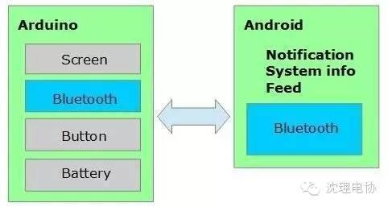
第二步：组件准备
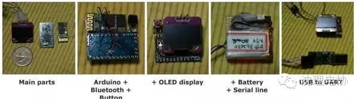
我选择的是最小巧的Arduino，Pro Mini，这是一个Uno R3的轻量级版本。上面甚至没有USB接口芯片，所以还需要额外准备一个USB转UART模块。这款Arduino有两个工作电压不同的版本（3.3v/5v），我选择的是3.3V的版本，因为蓝牙模块和显示屏都支持3.3V，3.7V的LiPo电池也能正常使用。
3.3V版本的Arduino的工作频率为8MHz，5V版本的工作频率为16MHz，但8MHz足够使用了。
一般Arduino Pro Mini的核心处理器件是ATmega328单片机，其RAM为2KB；而只配置有1KB RAM的ATmega128的Arduino版本是不够用的。
蓝牙
HC~06蓝牙模块比较常见。其中有一款带有一个接口板，上面包含一个重置按钮和一个LED，但体积也相对较大。鉴于接口板对本项目没多大意义，还额外增加了成本，所以这里选择的不带接口板的HC~06。
显示屏
我们需要一块足够小、功耗足够低的显示屏。我最后选择了Adafruit的0.96英寸的128×64 OLED显示屏，支持I2C，SPI，可以很方便地和Arduino进行连接。我这里选用的是I2C和SSD1306驱动芯片。
电池
我的选择是3.7V LiPo电池，容量为140mAh。一般使用可坚持7小时。同样，选择电池的尺寸很重要。
其它
除了线材等组件之外，还需要用到一颗10 kΩ电阻（用于按钮连接）。
第三步：组装
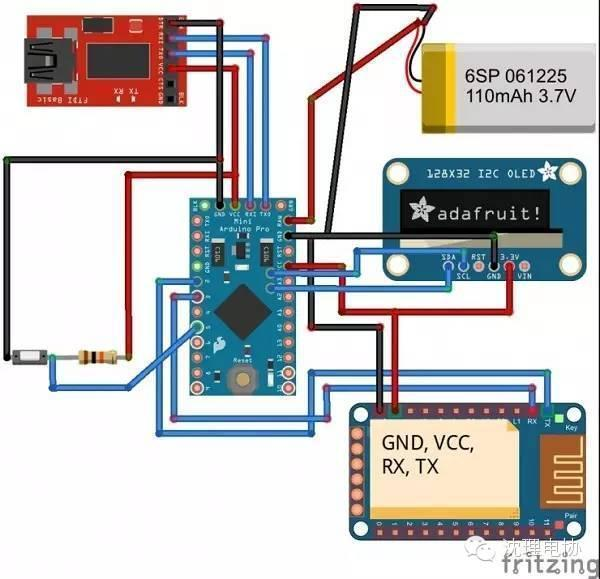
·VCC ~ 3.3V
·GND ~ GND
·TX ~ D2
·RX ~ D3
OLED连接Arduino：
·GND ~ GND
·VCC ~ VCC
·SDA ~ A4（模拟引脚4）
·SCL ~ A5（模拟引脚5）
如果使用的是SPI接口，则可以参考Adafruit教程按如下方式连接：
·D1 : MOSI ~ Arduino D11 (MOSI)
·D2 : MISO ~ Arduino D12 (MISO)(可选)
·D0 : CLK ~ Arduino D13 (SCK)
·DC : DC（数据命令）~ Arduino D8（或其它）
·CS : CS（芯片选择） ~ Arduino D10 (SS)
·RES : RESET ~ Arduino D9 （或其它）
按钮：
连接方式如图，注意这里要用到一个10 kΩ电阻。
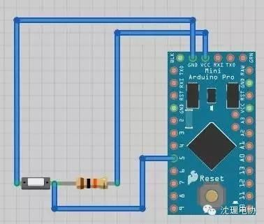
·正极 ~ RAW
·负极 ~GND
USB转UART模块连接Arduino：
·3.3V ~ VCC
·TXD ~ RXD
·RXD ~ TXD
·GND ~ GND
安装尺寸如下：
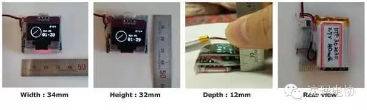
第四步：编译Arduino代码并上传
安装图形驱动：
首先需要安装图形处理库 Adafruit_SSD1306和Adafruit-GFX-Library，这样才能在OLED上显示图像。（在某些开发环境下，Adafruit库会与Robot_xxx库产生冲突；如果发生了这种情况，备份Robot_xxx库后将其从库文件夹中删除。）
警告：如果你使用的是带SH1106驱动的OLED，那就在GitHub上下载Adafruit_SH1106驱动。
另外，本项目也支持u8glib了，你可以在其官方主页下载支持Arduino的版本。
复制位图图像头文件：
将RetroWatchArduino文件夹中的bitmap.h文件复制到路径/Arduino安装文件夹/Arduino/hardware/libraries/RetroWatch。如果没有这样的路径，可以自己创建。
修改源代码：
打开Arduino IDE并载入RetroWtchArduino.ino。如果你使用的引脚和本教程不一样，需要对引脚定义进行修改：
SoftwareSerial BTSerial(9, 8); //蓝牙TX, RX连接引脚
int buttonPin = 5; // 按钮引脚
display.begin(SSD1306_SWITCHCAPVCC, 0x3C); // OLED I2C地址，使用你的地址替换Ox3D
如果你使用的是u8glib，那么就载入RetroWatchArduino_u8glib.ino文件，然后注意以下代码：
U8GLIB_SSD1306_128X64 u8g(U8G_I2C_OPT_NONE|U8G_I2C_OPT_DEV_0); //根据你选用的显示屏进行修改
SoftwareSerialBTSerial(2,3); // 蓝牙TX, RX连接引脚
int buttonPin = 5; // 按钮引脚
如果你使用的是Adafruit的图形库，并有使用到OLED的Reset引脚，那就将OLED的Reset和Arduino的D8引脚相连，当然也可以自定义：
#define OLED_RESET 8
Adafruit_SSD1306 display(OLED_RESET);
编译和上传：
以上步骤完成之后编译上传，成功之后显示屏上面会显示RetroWatch Arduino Logo和Adafruit Logo。Logo之后屏幕会显示00:00，如下图所示：

第五步：安卓软件及其源代码
安卓软件安装之后检查一下系统是否授予了其读取通知的权限。
接下来打开手机蓝牙，将安卓手机和Arduino的蓝牙进行配对。然后在RetroWatch软件中选择连接好的Arduino，界面上显示“Connected”即表示连接成功。
点击菜单，选择Data transfer to Watch（传输数据到手表），然后设备会用过蓝牙将时间和信息传输到智能手表。
因为手表硬件的性能有限，很多功能我们需要通过安卓应用实现，手表本身的主要功能是显示。在安卓应用中，你可以设置可推送消息（仅支持英文字符显示）和状态通知（手机电池电量和信号强度等）的类型，也可以推送应用中订阅的RSS（可以订阅天气RSS，用来在手表上显示天气）。更新每30分钟同步一次。
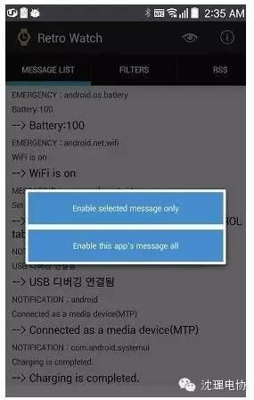
第六步：手表功能介绍
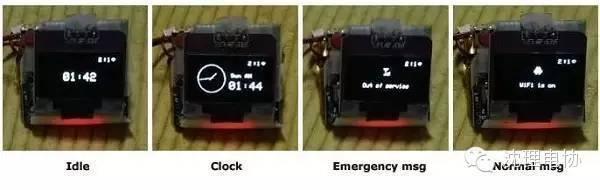
时钟显示： 显示与之相连的安卓手机上的时间。另外，时间的显示还可以修改，目前提供了模拟显示、数字显示和混合显示三种模式。如果你点击一下按钮，则手表进入紧急信息显示模式。如果10分钟内没有什么数据更新和操作，则显示界面会切换到待机界面。
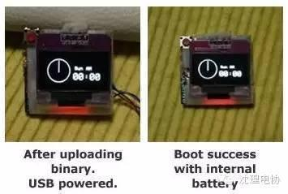
普通信息显示： 紧急信息展示完成之后手表会继续展示普通信息，点击按钮或5秒不操作就显示下一条信息。信息显示完成之后，手表切换回时钟显示。普通信息最多存储7条。
待机显示： 如果10分钟内没有什么数据更新和操作，显示界面会切换到待机界面。在这一模式下，手表界面仅显示指示符（可在安卓应用中选择）和hh:mm模式的时间，其功耗也降低了。在待机模式下点击按钮或收到新信息，手表进入时钟显示模式。
第七步：外部结构制作
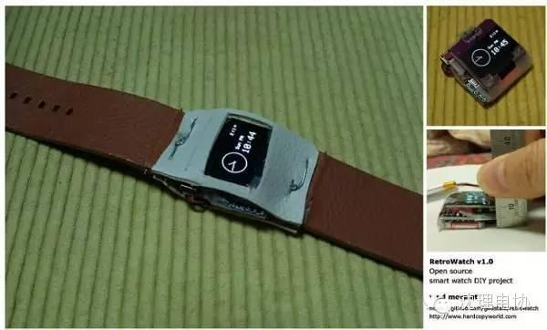
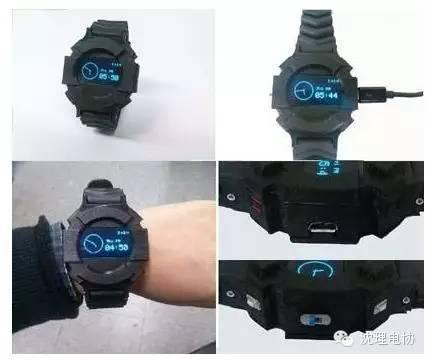
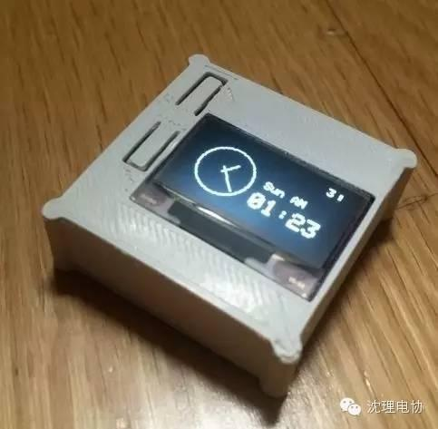
====电子协会=====
关注“沈理电协”微信公众平台，了解更多资讯！


信息部/吴心成